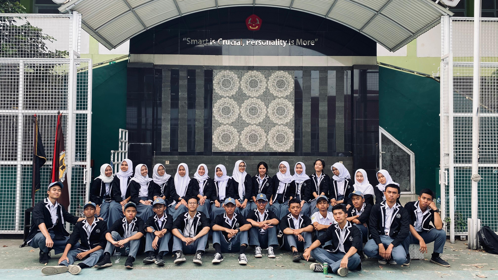
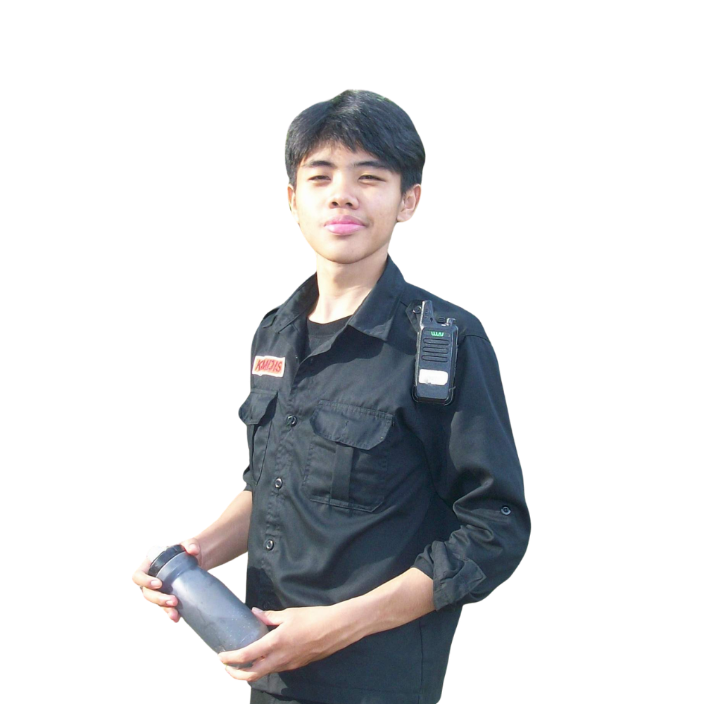
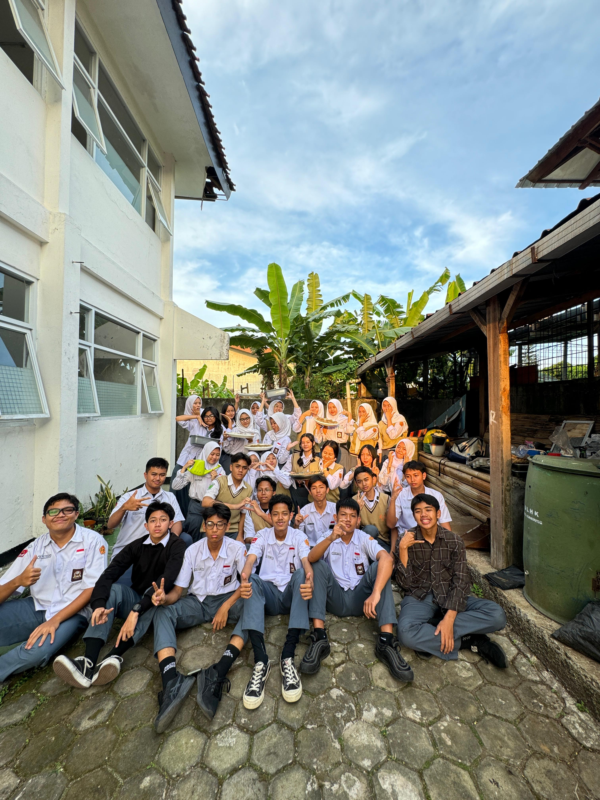
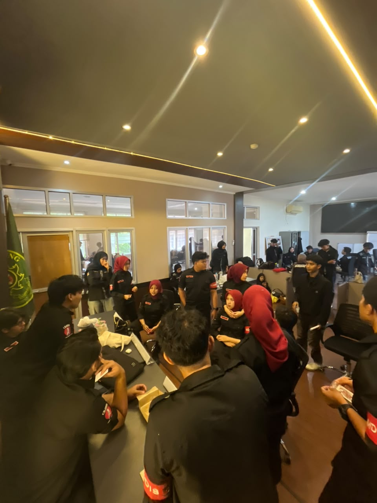

HIGHLIGHT // 01
OSIS SMAN 12 Bandung
Ketua Seksi Bidang Agama (2023-2024), memimpin seluruh program kegiatan keagamaan.

Mahasiswa semester 3 Informatika angkatan 2025 dari UIN Sunan Gunung Djati Bandung. Minat Project Management, IT Cloud, Community Contribute.

Ketua Seksi Bidang Agama (2023-2024), memimpin seluruh program kegiatan keagamaan.

Bendahara Umum (2023-2024), mengelola dan mencatat laporan keuangan organisasi.

Periode 2026-2027, menjaga ketertiban, kedisiplinan, & pengawasan aturan organisasi.

Kegiatan outdoor & pendakian Gunung Artapela sebagai sarana rekreasi diri (2026).
IT Project Manager • Informatics Student
Mahasiswa Teknik Informatika yang menolak terjebak di balik layar kode semata. Dengan pendekatan analitis, visioner, dan eksekutor, fokus utama saya adalah menerjemahkan kerumitan teknis menjadi arsitektur solusi yang terstruktur, terukur, dan berdampak nyata—baik dalam mengelola proyek teknologi IT Project Management, merancang infrastruktur Cloud, maupun menyusun tata kelola sistem IT Governance.
Mengorkestrasi alur kerja tim, menyusun PRD & Gantt Chart presisi, dan memastikan produk rilis tepat sasaran.
Menyelaraskan infrastruktur cloud & tata kelola teknologi dengan strategi organisasi agar efisien dan minim risiko.
Menyederhanakan konsep abstrak algoritma, AI, dan arsitektur sistem menjadi bahasa manusia yang aplikatif.
Merepresentasikan pemikir visioner & manajer proyek yang observan. Dilengkapi Visor Cloud AI, Hologram Gantt Chart, dan jaket varsity #13.
Pemetaan kapabilitas praktis (4 Blok = Core Focus, 3 Blok = Practitioner, 2 Blok = Fundamental).
Setiap titik simpul pada bola siber di samping merepresentasikan keterhubungan antara dokumen kebutuhan produk (PRD), eksekusi kode, reliabilitas cloud, dan komunikasi tim. Geser kursor pada kanvas 3D untuk memutar orbit matriks.